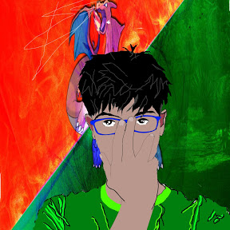

ARIHANT KAUSHIK
arihantkaushik_sa@srmuniv.edu.in
+91-949180158 (M)
RDG NO.: RA1811030010010
Brach: B Tech CSE SC
Chennai, India

Certification and achievements
- 3rd Prize in interschool cubing competion
- Interhouse Football Champion 2014 and 2015
- u-16 NATIONAL Football 2013
- CBSE NATIONAL SCIENCE EXHIBITION 2016
- Interhouse Cricket Champion 2016
- City Level coding competion
Projects Initiated
- Old School snake game on C++
- Made Logic gates by using diodes
- Made a small pokemon rom hack
- Made a client side Club Penguin trainer
Area of Interest
- HTML
- CSS
- java, javascript
- c/c++
- Games
- coding
- Techonolgy
- Sports
- Anime Drawings
Personal Skills
- Team Management
- Punctual
- Hard Working
- Dedicated
- Focused
- Determined
Personal Info
Date of Birth :25/11/1999
Gender :Male
Father’s name :Sk Sharma
Language Known : English, Hindi
Current Address : 102 Sannasi A, SRM Institute of Science and Technology, Ktr, Chennai
Hobbies :Discovering the world around me,